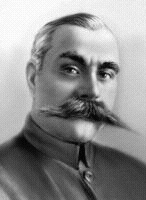

Каменев С.С.
Сергей Сергеевич Каменев
Советский военачальник, командарм 1-го ранга.
4.04.1881—25.08.1936
Родился в семье военного инженера в Киеве. В 1898 г. закончил Владимирский Киевский кадетский корпус, 1 сентября того же года поступил на службу юнкером в Александровское военное училище в Москве. Был выпущен 9 августа 1900 г. по первому разряду подпоручиком в Луцкий 165-й пехотный полк, где с 1900 по 1904 гг. служил батальонным адъютантом полка. 9 августа 1903 г. был произведён в поручики. В 1907 г. Сергей Каменев закончил Николаевскую военную академию Генерального штаба в Петербурге по первому разряду. 7 мая 1907 г. был произведён в штабс-капитаны. С 6 ноября 1907 г. по 7 ноября 1909 г. Каменев отбывал цензовое командование ротой в 165-м пехотном Луцком полку. В период командования ротой Каменев попутно делается внештатным преподавателем Киевского военного училища, где преподавал тактику и топографию.
С 26 ноября 1909 г. работал помощником старшего адъютанта штаба Иркутского военного округа. С 6 декабря 1909 года капитан. С 10 февраля 1910 г. служил старшим адъютантом штаба 2-й кавалерийской дивизии. Будучи по первоначальной службе пехотным командиром, Сергей Каменев усиленно изучал кавалерийское дело, участвовал во всех кавалерийских маневрах и поездках. С 26 ноября 1911 года — помощник старшего адъютанта в оперативно-мобилизационном отделе штаба Виленского военного округа. 6 декабря 1912 года был награждён орденом св. Станислава 3-й степени.
С апреля 1918 г. — на службе в РККА. Назначен военным руководителем Невельского района Западного участка отрядов завесы. С июня 1918 г. — командир 1-й Витебской пехотной дивизии. При поддержке Л. Д. Троцкого Каменев постоянно назначался на высшие посты в РККА. С августа 1918 г. — военный руководитель Западного участка завесы и одновременно военрук Смоленского района. С августа (сентября) 1918 по июль 1919 г. (с перерывом в мае 1919 г.) — командующий войсками Восточного фронта. Руководил наступлением Красной армии на Волге и Урале. С 8 июля 1919 по апрель 1924 года — главнокомандующий вооружёнными силами Республики.
В соответствии с директивами ЦК РКП(б), В. И. Ленина под руководством Каменева осуществлялись операции по разгрому Деникина и Врангеля, отражению нападения Польши. В 1920 г. Каменев был награждён Золотым боевым оружием со знаком ордена Красного Знамени. В том же году он разработал план наступления на Польшу, но не смог его осуществить из-за недооценки сил противника, а также противодействия командования Юго-Западного фронта — А. И. Егорова и И. В. Сталина. При его участии были подавлены контрреволюционные восстания в Карелии, Бухаре, Фергане и Тамбовское восстание.
С апреля 1924 г. — инспектор РККА, а с марта 1925 г. — начальник штаба РККА. С ноября 1925 г.— главный инспектор, а с августа 1926 г. — начальник Главного управления РККА, главный руководитель цикла тактики Военной академии им. Фрунзе, одновременно с апреля 1924 по май 1927 г. член РВС СССР. С мая 1927 г. — заместитель наркома по военным и морским делам и заместитель председателя Реввоенсовета СССР. В 1930 г. на XVI съезде Каменев был принят в ВКП(б). С переформированием в марте 1934 г. наркомата по военным и морским делам в наркомат обороны и упразднением в июне того же года Реввоенсовета СССР ликвидированы и занимаемые Каменевым должности. 1 июля 1934 г. приказом наркома обороны Сергей Сергеевич Каменев был назначен начальником Управления ПВО РККА и таким образом понижен в должности. В 1935 г. Каменеву было присвоено звание командарма 1-го ранга, в то время как пятерым военачальникам, служившим во время Гражданской войны под командованием Каменева (Ворошилову, Будённому, Блюхеру, Егорову и Тухачевскому) было присвоено более высокое звание маршала.
Автор мемуаров «Записки о Гражданской войне и военном строительстве», автор воспоминаний о Ленине.
Был одним из организаторов Осоавиахима, много занимался освоением Арктики, осуществляя помощь итальянской экспедиции Умберто Нобиле и зажатому льдами «Челюскину».
Скончался 25 августа 1936 г. от сердечного приступа. Урна с прахом Каменева с воинскими почестями была захоронена в Кремлевской стене.
Вскоре после смерти, на волне чисток в РККА 1937—1939 гг., Каменев был обвинён в участии в «военно-фашистском заговоре», его имя было вычеркнуто из официальной истории Гражданской войны, военные труды были преданы забвению. По результатам XX съезда КПСС С.С. Каменев был полностью реабилитирован, восстановлена его подлинная биография.
| Каменев Л.Б.< Предыдущая | Следующая >Карахан Л.М. |
|---|